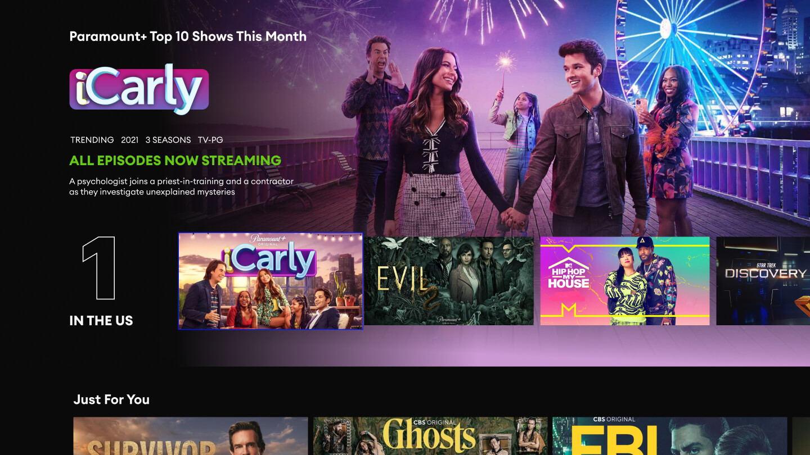
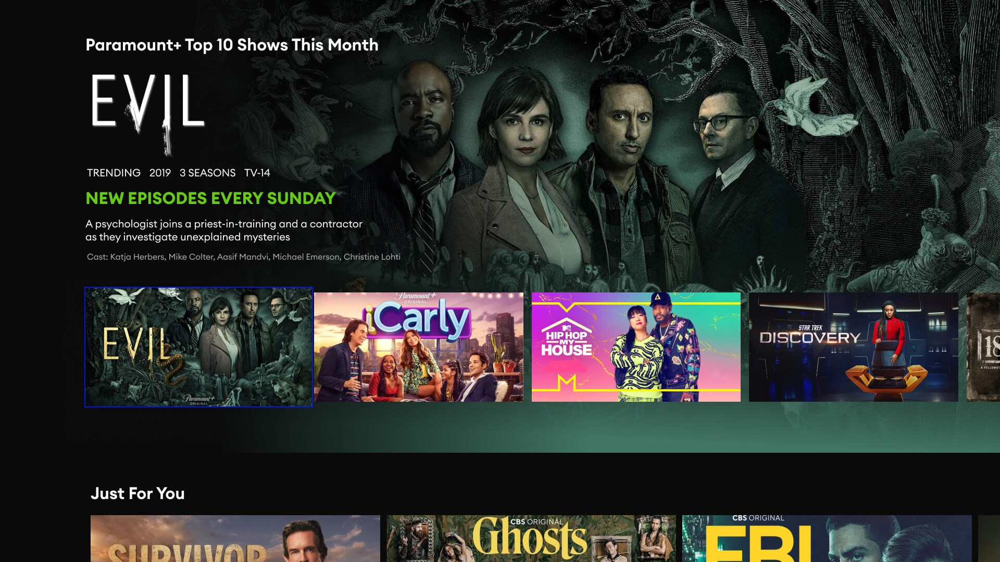
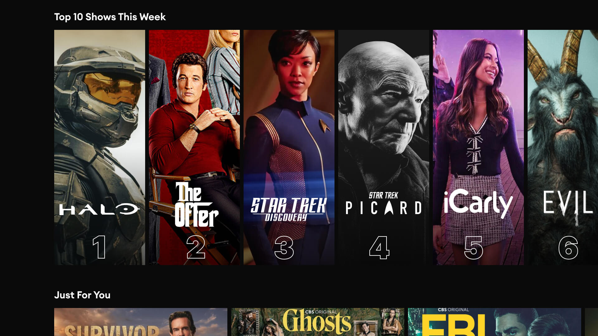

Paramount+ - Top 10
Paramount+ is a streaming service that offers a variety of content, including movies, TV shows, sports, and news. The Top 10 feature was created to help users find the most popular content on the service. The feature displays a list of the top 10 most-watched movies, TV shows, and episodes, as well as the top 10 most-added shows.
My Role
I was the lead and only designer on the Top 10 feature project. I worked with the project manager to define the feature requirements, but I was not given a lot of specific requirements. This meant that I had to use my senior-level skills to figure out the requirements based on the business goals and needs. I also sat in on user interviews with our user research team. This helped me to understand the user needs and pain points. I used this information to inform my design decisions.
Design Process
I used Figma to design the Top 10 feature. I started by creating wireframes to sketch out the basic layout of the feature. Once I was happy with the wireframes, I created high-fidelity mockups. I then created a prototype of the feature so that I could test it with users. I used this feedback to make changes to the design. Once I was happy with the design, I created a presentation deck to present the feature to stakeholders. I also created a user guide to document the feature for developers.
Development and Testing
I worked with the Apple TV, Roku, and web teams to develop the Top 10 feature. I also met with these teams to have pairing sessions to ensure that the feature was developed correctly. I used my Roku and Apple TV to test the builds of the feature. I also used Jira to give my QA feedback.
Results
The Top 10 feature was a success. It is set for release sometime in 2023 and I'm sure it will be well received by the Paramount+ users.
Conclusion
I am proud of the work that I did on the Top 10 feature. It was a challenging project, but I was able to use my senior-level skills to successfully complete it. I am confident that I can use my skills to contribute to the success of future projects.
Key Takeaways
Be organized and efficient. Communicate regularly with the team. Get feedback from stakeholders early and often. Be flexible and adaptable. Celebrate your successes and learn from your failures.
Schedule a 1:1 Mentorship Session
I offer mentorship sessions for UX career growth, Portfolio and Resume Reviews.